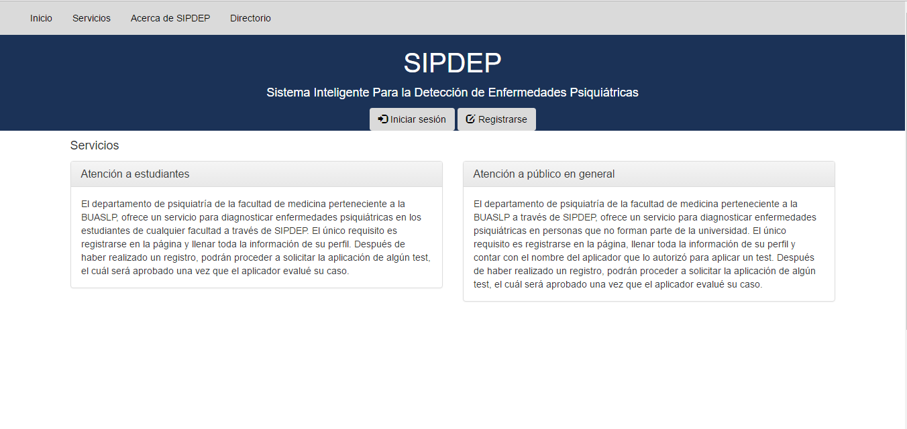

SIPDEP es un sistema que va creciendo conforme a las necesidades de los interesados y sirve de ayuda para conocer algunos padecimientos que los pacientes aun no tienen conocimiento de ello.
Conforme, vaya mejorándose el sistema, se convertirá en una herramienta que no solo ayudara a la comunidad universitaria, si no, al publico en general y que será un software que facilite los procedimientos psiquiátricos y los diagnósticos para que se de un tratamiento optimo a los pacientes.